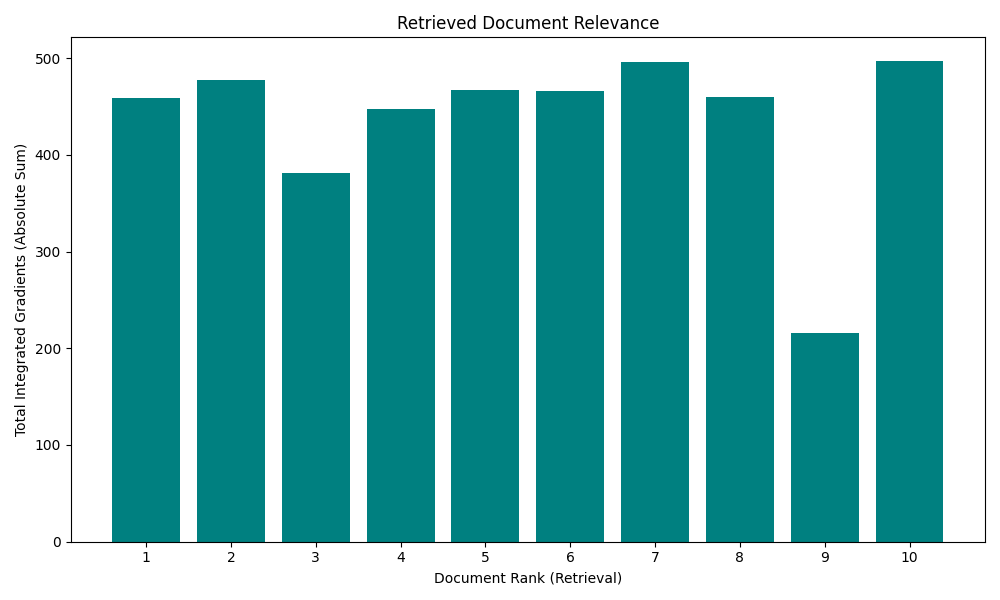
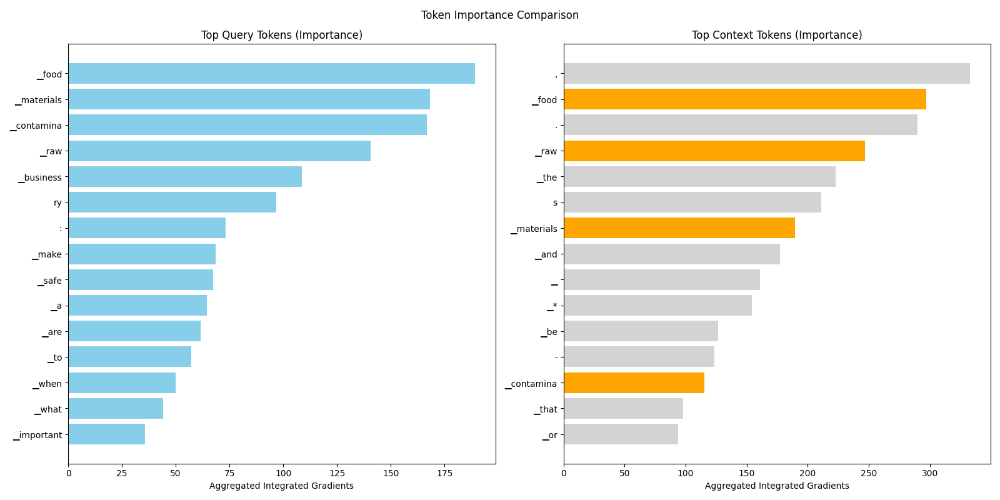

Analysis: query_34
Query: ▁query:▁What▁are▁the▁important▁steps▁to▁make▁sure▁raw▁materials▁are▁safe▁and▁not▁contaminated▁when▁they▁come▁into▁a▁food▁business?
Document Relevance

Weighted Overlap

Token Comparison

Documents
Document 1 (Click to Expand)
▁In▁addition▁to▁high-quality▁products,▁each▁production▁line▁should▁be▁equipped▁with▁a▁metal▁detector▁to▁prevent▁metallic▁foreign▁matter▁from▁being▁mixed▁into▁the▁food,▁and▁its▁function▁should▁be▁maintained▁at▁any▁time.▁0.8mm▁Iron▁metal▁and▁1.0mm▁Fine▁metal▁pieces▁or▁metal▁needles▁above▁non-ferrous▁metals.▁6.▁Pay▁attention▁to▁the▁following▁when▁making▁ready-to-eat▁meals▁(1)▁Cross-contamination▁of▁raw▁and▁cooked▁food▁should▁be▁avoided.▁Raw▁and▁cooked▁food▁should▁not▁be▁used▁on▁the▁same▁workbench▁or▁on▁the▁same▁machine▁or▁at▁the▁same▁time.▁After▁touching▁raw▁food,▁the▁same▁staff▁must▁wash▁and▁disinfect▁hands▁and▁change▁work▁clothes▁before▁handling▁cooked▁food.▁(2)▁All▁kinds▁of▁processed▁and▁conditioned▁semi-finished▁products▁should▁be▁packaged▁within▁the▁shortest▁storage▁time▁and▁clearly▁marked▁with▁After▁the▁expiration▁date▁(except▁for▁the▁soup▁barrels▁of▁group▁meal▁products▁that▁are▁not▁marked),▁transport▁and▁deliver▁to▁consumers▁as▁soon▁as▁possible.▁(6)▁Quality▁control▁*▁The▁quality▁control▁department▁should▁be▁separated▁from▁the▁manufacturing▁and▁sales▁departments.▁*▁Appropriate▁quality▁control▁operating▁standards▁should▁be▁established▁and▁implemented.▁The▁content▁should▁include▁the▁quality▁specifications▁and▁acceptance▁standards▁of▁raw▁materials,▁materials,▁semi-finished▁products,▁finished▁products▁or▁packaging▁materials,▁control▁points▁in▁the▁processing▁process,▁control▁standards,▁management▁of▁food▁additives,▁Warehousing▁management▁and▁transportation▁and▁distribution▁management,▁etc.,▁and▁the▁manufacturing▁process▁and▁quality▁control▁operations▁need▁to▁be▁traceable▁and▁traceable▁to▁ensure▁product▁quality.▁*▁The▁factory▁should▁establish▁a▁supplier▁evaluation▁system.▁All▁food▁raw▁materials▁and▁materials▁should▁pass▁the▁quality▁control▁inspection▁before▁they▁can▁be▁used▁in▁the▁factory,▁but▁they▁can▁be▁replaced▁by▁the▁supplier’s▁certificate▁or▁guarantee;▁those▁who▁fail▁to▁pass▁the▁acceptance▁should▁be▁clearly▁marked▁and▁handled▁appropriately▁Avoid▁misuse.▁*▁The▁raw▁materials▁and▁materials▁used▁should▁comply▁with▁relevant▁sanitary▁standards▁or▁regulations,▁and▁the▁relevant▁information▁of▁the▁source▁management,▁including▁the▁source▁of▁the▁raw▁materials▁and▁the▁quantity,▁etc.,▁should▁be▁clear,▁and▁be▁traceable▁and▁traceable.▁When▁the▁raw▁materials▁are▁likely▁to▁be▁contaminated▁or▁residues▁by▁pesticides,▁animal▁drugs,▁heavy▁metals▁or▁other▁toxins,▁they▁shall▁be▁confirmed▁that▁their▁safety▁is▁in▁compliance▁with▁relevant▁laws▁and▁regulations▁before▁they▁can▁be▁used.▁The▁safety▁confirmation▁shall▁be▁replaced▁by▁the▁certification▁documents▁provided▁by▁the▁supplier.▁Regular▁delivery▁inspection▁mechanism.▁*▁The▁food▁packaging▁container▁supplier▁shall▁be▁required▁to▁provide▁or▁attach▁a▁safety▁certificate▁of▁the▁packaging▁material.
Document 2 (Click to Expand)
▁4.▁The▁factory▁should▁establish▁and▁implement▁a▁raw▁material▁supplier▁evaluation▁system;▁raw▁materials▁and▁materials▁can▁only▁be▁used▁in▁the▁factory▁after▁passing▁the▁quality▁control▁inspection,▁or▁they▁can▁be▁replaced▁by▁the▁supplier’s▁inspection▁certificate;▁the▁finished▁product▁should▁undergo▁strict▁quality▁inspection▁confirmation▁and▁product▁temperature▁Shipment▁can▁only▁be▁made▁after▁passing▁the▁test.▁The▁principle▁of▁first-in▁first-out▁shall▁be▁used▁for▁shipment,▁and▁the▁shipping▁vehicle▁shall▁be▁inspected▁to▁avoid▁contamination▁of▁the▁goods.▁5.▁The▁inspection▁and▁acceptance▁operating▁standards▁for▁raw▁materials▁and▁materials▁and▁equipment▁should▁be▁established.▁The▁content▁should▁include▁the▁quality▁specifications▁of▁raw▁materials▁and▁materials▁and▁equipment,▁the▁specifications▁and▁standards▁of▁cleaning▁and▁disinfection▁products,▁the▁applicability▁evaluation▁system▁of▁equipment,▁the▁sampling▁plan▁of▁raw▁materials,▁and▁the▁temperature▁management▁of▁raw▁materials.▁System▁and▁procedures▁for▁handling▁non-conforming▁products,▁etc.▁(1)▁The▁raw▁materials▁and▁materials▁used▁should▁comply▁with▁the▁relevant▁food▁hygiene▁standards▁and▁regulations,▁and▁the▁relevant▁information▁of▁the▁source▁management,▁including▁the▁source▁of▁the▁raw▁materials▁and▁the▁quantity,▁etc.,▁should▁be▁clear▁and▁traceable▁and▁traceable.▁The▁main▁raw▁materials▁and▁ingredients▁should▁be▁tested▁according▁to▁the▁sampling▁plan▁and▁confirmed▁to▁meet▁the▁quality▁specifications▁in▁the▁factory.▁The▁supplier▁can▁also▁provide▁an▁inspection▁certificate▁instead.▁The▁inspection▁items▁should▁include▁the▁type▁and▁content▁of▁possible▁pathogens.▁Raw▁materials▁and▁materials▁that▁fail▁to▁pass▁the▁acceptance▁shall▁be▁clearly▁marked▁and▁handled▁appropriately▁to▁avoid▁misuse.▁(2)▁The▁supplier▁shall▁provide▁or▁attach▁the▁safety▁information▁of▁chemicals▁used▁for▁cleaning,▁disinfection▁and▁other▁purposes▁and▁their▁concentration▁detection▁methods▁Or▁test▁paper.▁(3)▁The▁food▁packaging▁container▁supplier▁shall▁be▁required▁to▁provide▁or▁attach▁a▁safety▁certificate▁of▁the▁packaging▁material.▁(4)▁The▁equipment▁supplier▁shall▁provide▁its▁equipment▁operating▁standards▁and▁cleaning▁and▁maintenance▁instructions.▁(5)▁Food▁additives▁suppliers▁should▁attach▁the▁registration▁number▁approved▁by▁the▁Ministry▁of▁Health▁and▁Welfare.▁Compound▁food▁additives▁should▁provide▁their▁complete▁ingredients▁and▁correct▁storage,▁addition▁limits▁and▁usage▁methods;▁related▁items▁should▁also▁be▁provided▁for▁items▁that▁are▁likely▁to▁be▁contaminated▁by▁microorganisms.▁Test▁results▁of▁microorganisms▁or▁pathogens.▁6.▁When▁raw▁materials▁are▁likely▁to▁be▁polluted▁or▁left▁with▁pesticides,▁animal▁drugs,▁heavy▁metals▁or▁other▁toxins,▁there▁should▁be▁a▁regular▁inspection▁mechanism▁To▁confirm▁that▁its▁safety▁or▁content▁complies▁with▁relevant▁laws▁and▁regulations.▁7.▁The▁storage▁life▁test▁of▁refrigerated▁food▁should▁be▁established▁to▁ensure▁the▁good▁quality▁of▁the▁product▁during▁the▁refrigeration▁period.
Document 3 (Click to Expand)
▁establishment▁should▁not▁accept▁any▁feedstock▁containing▁parasites,▁micro-organisms▁or▁toxic▁substances,▁decomposed▁or▁foreign,▁which▁can▁not▁be▁reduced▁to▁levels▁the▁normal▁processes▁of▁classification,▁preparation▁or▁manufacture.▁The▁technical▁leader▁must▁have▁the▁identity▁and▁quality▁standards▁of▁the▁feedstock▁or▁inputs▁so▁as▁to▁be▁able▁to▁control▁the▁contaminants▁that▁can▁be▁reduced▁to▁acceptable▁levels▁by▁normal▁grading▁and▁/▁or▁preparation▁or▁manufacturing▁processes.▁*▁The▁quality▁control▁of▁the▁feedstock▁or▁input▁should▁include▁their▁inspection,▁classification▁and▁if▁necessary▁laboratory▁analysis▁before▁being▁taken▁to▁the▁manufacturing▁line.▁Only▁use▁raw▁material▁or▁inputs▁in▁good▁condition.▁*▁At▁raw▁material▁and▁the▁ingredients▁stored▁in▁the▁establishment's▁areas▁should▁be▁kept▁in▁such▁a▁condition▁as▁to▁prevent▁deterioration,▁protect▁against▁contamination▁and▁reduce▁damage▁to▁the▁least▁possible▁extent.▁It▁should▁be▁ensure,▁through▁the▁s▁the▁adequate▁rotation▁of▁raw▁material▁and▁ingredients.▁8.2.▁Prevention▁of▁cross-contamination:▁*▁Effective▁measures▁should▁be▁taken▁to▁prevent▁contamination▁of▁food▁material▁by▁direct▁or▁indirect▁contact▁with▁contaminated▁material▁in▁the▁early▁stages▁of▁the▁process.▁*▁The▁people▁who▁manipulate▁raw▁material▁or▁semi▁productswith▁the▁risk▁of▁contaminating▁the▁final▁product▁should▁not▁come▁into▁contact▁with▁any▁final▁product▁until▁they▁have▁removed▁all▁clothing▁protection▁that▁was▁used▁during▁the▁handling▁of▁raw▁material▁semi-processed▁products▁with▁which▁they▁have▁come▁into▁contact▁or▁have▁been▁contaminated▁by▁feedstock▁or▁semi-processed▁products▁and,▁other▁protective▁clothing▁cleaned▁and▁complied▁with▁items▁7.5▁and▁7.6.▁*▁If▁contamination▁is▁possible,▁hands▁should▁be▁carefully▁washed▁between▁one▁and▁the▁other▁handling▁of▁products▁at▁various▁stages▁of▁the▁process.▁*▁All▁equipment▁and▁utensils▁that▁have▁come▁into▁contact▁with▁raw▁material▁or▁contaminated▁material▁should▁be▁thoroughly▁cleaned▁and▁disinfected▁before▁being▁used▁to▁contact▁with▁finished▁products.▁*▁Water▁use:▁*▁As▁a▁general▁principle▁in▁food▁handling▁only▁drinking▁water▁should▁be▁used.▁*▁Non-potable▁water▁may▁be▁used▁for▁the▁production▁of▁steam,▁cooling▁system,▁fire▁control▁and▁other▁similar▁purposes▁not▁related▁to▁food,▁with▁the▁approval▁of▁the▁competent▁body.
Document 4 (Click to Expand)
▁*▁A▁food▁traceability▁and▁tracking▁system▁should▁be▁established:▁the▁raw▁materials▁used▁should▁comply▁with▁relevant▁laws▁and▁regulations,▁and▁have▁relevant▁data▁or▁records▁that▁can▁be▁traced▁back▁to▁the▁source▁(for▁example:▁raw▁material▁supplier,▁purchase▁date,▁transaction▁receipt,▁imported▁food▁and▁related▁product▁import▁permission▁notice▁And▁other▁information),▁and▁link▁this▁data▁to▁the▁product▁processing▁operation▁record.▁The▁relevant▁records▁of▁acceptance,▁production▁and▁shipment▁should▁be▁kept▁for▁at▁least▁5▁years.▁*▁Careful▁selection▁of▁good▁suppliers,▁it▁is▁recommended▁to▁establish▁a▁"raw▁material▁supplier▁purchase▁contract"▁to▁ensure▁that▁the▁raw▁material▁meets▁the▁requirements.▁(2)▁Storage▁of▁raw▁materials,▁semi-finished▁products▁and▁finished▁products▁*▁During▁storage,▁it▁should▁be▁prevented▁from▁being▁affected▁by▁temperature▁and▁humidity▁fluctuations▁to▁avoid▁deterioration▁or▁corruption.▁*▁The▁stored▁raw▁materials,▁semi-finished▁products▁and▁finished▁products▁should▁be▁covered▁or▁packaged▁and▁placed▁off▁the▁ground.▁It▁is▁recommended▁to▁be▁placed▁on▁pallets▁made▁of▁materials▁that▁are▁not▁easily▁contaminated▁(such▁as▁stainless▁steel▁racks▁or▁plastic▁plates).▁*▁If▁the▁stored▁raw▁materials,▁semi-finished▁products,▁and▁finished▁products▁are▁sub-packaged,▁the▁date▁of▁sub-package▁and▁expiry▁date▁must▁be▁added,▁or▁other▁marks▁that▁can▁identify▁the▁effective▁date.▁*▁It▁should▁comply▁with▁the▁first-in,▁first-out▁principle,▁and▁record▁it.▁*▁Food▁additives▁must▁be▁stored▁in▁a▁special▁area,▁managed▁by▁a▁special▁person,▁and▁registered▁in▁a▁special▁book▁the▁type▁of▁use,▁purchase▁quantity,▁use▁amount▁and▁inventory.▁*▁Allergen▁raw▁materials▁should▁be▁clearly▁labeled,▁stored▁in▁a▁special▁area,▁or▁separated▁by▁other▁means.▁*▁Items▁or▁packaging▁materials▁that▁may▁contaminate▁raw▁materials,▁semi-finished▁products▁or▁finished▁products▁should▁be▁clearly▁marked,▁stored▁in▁special▁areas,▁or▁separated▁by▁other▁means▁to▁prevent▁cross-contamination.▁*▁During▁the▁storage▁process,▁regular▁inspections▁should▁be▁made▁and▁accurate▁records▁should▁be▁made;▁when▁there▁are▁abnormalities,▁they▁should▁be▁dealt▁with▁immediately▁to▁ensure▁quality▁and▁hygiene.▁(3)▁Weighing▁and▁blending▁*▁Before▁use,▁check▁the▁food▁contact▁surface▁of▁production▁equipment▁or▁utensils▁to▁ensure▁that▁it▁is▁smooth▁and▁clean,▁free▁of▁pits,▁cracks,▁or▁dirt,▁and▁avoid▁contamination▁or▁foreign▁matter.
Document 5 (Click to Expand)
▁*▁A▁food▁traceability▁and▁tracking▁system▁should▁be▁established:▁the▁raw▁materials▁used▁should▁comply▁with▁relevant▁laws▁and▁regulations,▁and▁have▁relevant▁information▁or▁records▁of▁traceable▁sources▁(such▁as:▁raw▁material▁suppliers,▁date▁of▁purchase,▁transaction▁documents,▁imported▁food▁and▁related▁product▁import▁permission▁notices)▁and▁other▁information),▁and▁link▁this▁information▁to▁product▁processing▁operation▁records,▁and▁records▁related▁to▁acceptance,▁production▁and▁shipment▁should▁be▁kept▁for▁at▁least▁5▁years.▁*▁Carefully▁select▁high-quality▁suppliers.▁It▁is▁recommended▁to▁establish▁a▁"raw▁material▁supplier▁purchase▁contract"▁to▁ensure▁that▁raw▁materials▁meet▁the▁requirements.▁(▁2▁)▁Storage▁of▁raw▁materials,▁semi-finished▁products▁and▁finished▁products▁*▁During▁storage,▁it▁should▁be▁protected▁from▁temperature▁and▁humidity▁fluctuations▁to▁avoid▁deterioration▁or▁corruption.▁*▁The▁stored▁raw▁materials,▁semi-finished▁products▁and▁finished▁products▁should▁be▁covered▁or▁packaged,▁and▁placed▁away▁from▁the▁ground.▁It▁is▁recommended▁to▁place▁them▁on▁pallets▁made▁of▁materials▁that▁are▁not▁easily▁polluted▁(such▁as▁stainless▁steel▁frame▁or▁plastic▁plate).▁*▁If▁the▁stored▁raw▁materials,▁semi-finished▁products,▁and▁finished▁products▁are▁repackaged,▁the▁repacking▁date▁and▁expiration▁date,▁or▁other▁marks▁that▁can▁identify▁the▁expiration▁date▁must▁be▁added.▁*▁The▁principle▁of▁first-in▁first-out▁shall▁be▁complied▁with,▁and▁records▁shall▁be▁made.▁*▁Food▁additives▁should▁be▁placed▁in▁a▁special▁area▁fully▁distinct▁from▁other▁raw▁materials,▁semi-finished▁products▁or▁finished▁products,▁and▁a▁special▁person▁should▁be▁designated▁to▁manage▁them,▁and▁the▁product▁name,▁type,▁and▁license▁of▁food▁additives▁should▁be▁listed▁in▁a▁paper▁or▁electronic▁file▁book▁Trade▁name▁or▁product▁registration▁code,▁and▁the▁quantity▁of▁purchase,▁delivery▁and▁inventory,▁4▁date.▁*▁Allergen▁raw▁materials▁should▁be▁clearly▁marked,▁stored▁in▁special▁areas,▁or▁separated▁in▁other▁ways.▁*▁Articles▁or▁packaging▁materials▁that▁may▁contaminate▁raw▁materials,▁semi-finished▁products▁or▁finished▁products▁should▁be▁clearly▁marked,▁stored▁in▁special▁areas,▁or▁separated▁in▁other▁ways▁to▁prevent▁cross-contamination.▁*▁During▁the▁storage▁process,▁it▁should▁be▁checked▁regularly▁and▁recorded;▁if▁there▁is▁any▁abnormality,▁it▁should▁be▁dealt▁with▁immediately▁to▁ensure▁the▁quality▁and▁hygiene.▁(▁3▁)▁Blending▁and▁marinating▁*▁During▁the▁food▁processing▁process,▁effective▁measures▁shall▁be▁taken▁to▁prevent▁metal▁or▁other▁sundries▁from▁mixing▁into▁the▁food.
Document 6 (Click to Expand)
▁All▁operations▁in▁the▁receiving,▁inspecting,▁transporting,▁segregating,▁preparing,▁manufacturing,▁packaging,▁and▁storing▁of▁food▁shall▁be▁conducted▁in▁accordance▁with▁adequate▁sanitation▁principles.▁Appropriate▁quality▁control▁operations▁shall▁be▁employed▁to▁ensure▁that▁food▁is▁suitable▁for▁human▁consumption▁and▁that▁food-packaging▁materials▁are▁safe▁and▁suitable.▁Overall▁sanitation▁of▁the▁plant▁shall▁be▁under▁the▁supervision▁of▁one▁or▁more▁competent▁individuals▁assigned▁responsibility▁for▁this▁function.▁All▁reasonable▁precautions▁shall▁be▁taken▁to▁ensure▁that▁production▁procedures▁do▁not▁contribute▁contamination▁from▁any▁source.▁Chemical,▁microbial,▁or▁extraneous-material▁testing▁procedures▁shall▁be▁used▁where▁necessary▁to▁identify▁sanitation▁failures▁or▁possible▁food▁contamination.▁All▁food▁that▁has▁become▁contaminated▁to▁the▁extent▁that▁it▁is▁adulterated▁within▁the▁meaning▁of▁the▁act▁shall▁be▁rejected,▁or▁if▁permissible,▁treated▁or▁processed▁to▁eliminate▁the▁contamination.▁(a)▁Raw▁materials▁and▁other▁ingredients.▁(1)▁Raw▁materials▁and▁other▁ingredients▁shall▁be▁inspected▁and▁segregated▁or▁otherwise▁handled▁as▁necessary▁to▁ascertain▁that▁they▁are▁clean▁and▁suitable▁for▁processing▁into▁food▁and▁shall▁be▁stored▁under▁conditions▁that▁will▁protect▁against▁contamination▁and▁minimize▁deterioration.▁Raw▁materials▁shall▁be▁washed▁or▁cleaned▁as▁necessary▁to▁remove▁soil▁or▁other▁contamination.▁Water▁used▁for▁washing,▁rinsing,▁or▁conveying▁food▁shall▁be▁safe▁and▁of▁adequate▁sanitary▁quality.▁Water▁may▁be▁reused▁for▁washing,▁rinsing,▁or▁conveying▁food▁if▁it▁does▁not▁increase▁the▁level▁of▁contamination▁of▁the▁food.▁Containers▁and▁carriers▁of▁raw▁materials▁should▁be▁inspected▁on▁receipt▁to▁ensure▁that▁their▁condition▁has▁not▁contributed▁to▁the▁contamination▁or▁deterioration▁of▁food.▁(2)▁Raw▁materials▁and▁other▁ingredients▁shall▁either▁not▁contain▁levels▁of▁microorganisms▁that▁may▁produce▁food▁poisoning▁or▁other▁disease▁in▁humans,▁or▁they▁shall▁be▁pasteurized▁or▁otherwise▁treated▁during▁manufacturing▁operations▁so▁that▁they▁no▁longer▁contain▁levels▁that▁would▁cause▁the▁product▁to▁be▁adulterated▁within▁the▁meaning▁of▁the▁act.▁Compliance▁with▁this▁requirement▁may▁be▁verified▁by▁any▁effective▁means,▁including▁purchasing▁raw▁materials▁and▁other▁ingredients▁under▁a▁supplier's▁guarantee▁or▁certification.▁(3)▁Raw▁materials▁and▁other▁ingredients▁susceptible▁to▁contamination▁with▁aflatoxin▁or▁other▁natural▁toxins▁shall▁comply▁with▁current▁Food▁and▁Drug▁Administration▁regulations▁and▁action▁levels▁for▁poisonous▁or▁deleterious▁substances▁before▁these▁materials▁or▁ingredients▁are▁incorporated▁into▁finished▁food.▁Compliance▁with▁this▁requirement▁may▁be▁accomplished▁by▁purchasing▁raw▁materials▁and▁other▁ingredients▁under▁a▁supplier's▁guarantee▁or▁certification,▁or▁may▁be▁verified▁by▁analyzing▁these▁materials▁and▁ingredients▁for▁aflatoxins▁and▁other▁natural▁toxins.
Document 7 (Click to Expand)
▁The▁food▁industry▁should▁not▁accept▁raw▁materials▁that▁are▁known▁to▁contain▁parasites,▁microbes,▁toxins,▁biodegradable▁or▁foreign▁substances▁that▁cannot▁be▁reduced▁to▁acceptable▁levels▁during▁the▁food▁sorting▁or▁processing▁procedure.▁-20-▁*▁Raw▁materials▁should▁be▁checked▁and▁sorted▁before▁being▁transferred▁to▁the▁processing▁line▁and▁laboratory▁tests▁performed▁if▁needed.▁Only▁raw▁materials▁that▁meet▁the▁specifications▁may▁be▁used▁in▁further▁processing.▁*▁Raw▁materials▁stored▁in▁factories▁should▁be▁maintained▁in▁conditions▁that▁prevent▁spoilage,▁protect▁against▁contamination▁and▁minimize▁damage▁such▁as▁stored▁in▁controlled▁temperature▁and▁humidity▁conditions.▁Raw▁material▁stocks▁should▁be▁rotated▁by▁the▁system▁First▁Expired▁First▁Out▁(FEFO)▁and▁/▁or▁First▁In▁First▁Out▁(FIFO).▁*▁The▁hot-blasted▁material,▁when▁required▁in▁the▁preparation▁of▁food▁for▁canning,▁should▁either▁be▁refrigerated▁immediately▁or▁be▁further▁processed▁immediately.▁Thermophilic▁growth▁and▁contamination▁should▁be▁minimized▁by▁good▁design,▁use▁of▁adequate▁operating▁temperatures,▁and▁routine▁cleaning.▁*▁All▁stages▁in▁the▁production▁process,▁including▁filling,▁thermal▁closure,▁treatment▁and▁cooling▁should▁be▁carried▁out▁as▁quickly▁as▁possible▁and▁under▁conditions▁that▁prevent▁contamination▁and▁deterioration,▁and▁minimize▁microbial▁growth▁in▁food.▁7.2.▁Cross▁Contamination▁Prevention▁*▁Effective▁prevention▁should▁be▁taken▁to▁prevent▁contamination▁of▁foodstuffs▁due▁to▁direct▁or▁indirect▁contact▁with▁materials▁from▁previous▁processing▁stages.▁*▁Employees▁who▁handle▁raw▁materials▁or▁semi-finished▁products▁that▁can▁contaminate▁the▁final▁product▁should▁not▁come▁into▁contact▁with▁the▁final▁product▁unless▁the▁employee▁has▁changed▁his▁clothing▁to▁clean▁protective▁clothing.▁*▁If▁contamination▁is▁possible,▁employees▁should▁wash▁their▁hands▁thoroughly▁between▁stages▁of▁handling▁the▁product▁at▁each▁different▁stage▁of▁processing.▁*▁Equipment▁which▁has▁been▁in▁direct▁contact▁with▁raw▁materials▁or▁materials▁that▁have▁been▁contaminated▁should▁be▁cleaned▁and▁thoroughly▁disinfected▁before▁contact▁with▁the▁final▁product.▁7.3.▁Water▁usage▁7.3.1.▁In▁general,▁food▁handling▁should▁only▁use▁drinking▁water▁that▁meets▁drinking▁water▁quality▁requirements.▁-21-▁*▁Clean▁water▁should▁be▁used▁for▁steam▁production,▁cooling,▁fire▁fighting,▁or▁other▁functions▁unrelated▁to▁food.▁However,▁clean▁water▁can▁be▁used▁in▁certain▁food▁handling▁areas▁as▁long▁as▁it▁does▁not▁cause▁a▁health▁hazard.▁*▁Water▁that▁is▁recirculated▁or▁for▁reuse▁within▁the▁plant▁should▁be▁treated▁and▁maintained▁in▁a▁condition▁that▁does▁not▁cause▁a▁health▁hazard▁from▁its▁use▁and▁does▁not▁contaminate▁raw▁materials▁and▁end▁products.▁Recirculated▁water▁should▁have▁a▁separate,▁identifiable▁distribution▁system.
Document 8 (Click to Expand)
▁*▁*▁*▁a▁statement▁that▁the▁packaging▁material▁is▁food▁grade▁and▁complies▁with▁Division▁23▁of▁the▁Food▁and▁Drug▁Regulations,▁the▁additive▁is▁permitted▁for▁use▁under▁the▁FDR,▁the▁food▁ingredient▁is▁safe▁orthe▁non-food▁chemical▁is▁safe▁and▁suitable▁for▁the▁intended▁use▁*▁*▁*▁signature▁of▁the▁supplier▁##▁2.▁Receiving▁step▁The▁following▁control▁measures▁can▁provide▁assurance▁that▁the▁ingredients,▁materials▁and▁non-food▁chemicals▁you▁receive▁are▁safe▁and▁suitable▁for▁use:▁*▁Inspect▁the▁condition▁of▁the▁conveyance,▁in▁which▁the▁ingredients,▁materials▁and▁non-food▁chemicals▁are▁transported▁to▁ensure▁that▁it's▁clean▁and▁sanitary▁and▁provides▁protection▁from▁physical▁damage▁and▁temperature▁abuse.▁Verify▁that:▁*▁*▁there▁is▁no▁odour,▁obvious▁dirt,▁debris,▁chemical▁contamination▁from▁fluids,▁powders▁or▁chemical▁residues▁that▁could▁have▁contaminated▁the▁ingredients,▁materials▁and▁non-food▁chemicals▁*▁*▁the▁temperature▁and▁humidity▁levels▁are▁adequate▁*▁*▁temperature▁measuring▁devices▁worked▁properly▁during▁transportation,▁as▁applicable▁*▁*▁the▁conveyance▁has▁close-fitting▁doors▁with▁no▁spaces▁at▁the▁sides▁or▁bottom,▁no▁cracks▁and▁that▁the▁insulation▁is▁in▁good▁condition▁*▁Verify▁that▁the▁ingredients,▁packaging▁materials▁and▁non-food▁chemicals▁being▁unloaded:▁*▁*▁are▁from▁a▁supplier▁you▁have▁approved▁*▁*▁are▁on▁your▁list▁of▁products▁approved▁for▁that▁supplier▁*▁*▁match▁the▁purchase▁order▁and▁specifications▁*▁*▁are▁properly▁labelled▁and▁identified▁*▁*▁are▁in▁suitable▁containers▁that▁protect▁them▁from▁contamination▁and▁damage▁*▁*▁are▁in▁packages▁that▁are▁not▁damaged▁or▁opened▁and▁show▁no▁signs▁of▁tampering▁or▁contamination▁*▁Verify▁that▁the▁ingredients▁are▁at▁the▁proper▁temperature▁to▁prevent▁their▁contamination,▁deterioration▁and▁spoilage.▁*▁Sample▁and▁test▁the▁food▁ingredients▁received▁to▁verify▁that▁they▁are▁safe▁and▁fit▁for▁consumption▁and▁comply▁with▁your▁specifications.▁*▁*▁Establish▁the▁tests▁to▁be▁conducted▁and▁frequency▁of▁testing▁as▁part▁of▁sampling▁procedures▁for▁incoming▁ingredients.▁To▁prevent▁the▁contamination▁of▁your▁food▁by▁the▁incoming▁ingredients,▁materials▁and▁non-food▁chemicals,▁have▁an▁area▁dedicated▁for▁deliveries▁that▁is▁separated▁from▁your▁processing▁area.▁##▁3.▁Storage▁To▁help▁prevent▁the▁contamination▁of▁your▁food▁during▁storage:▁*▁remove▁the▁outer▁packaging▁before▁food▁enters▁the▁storage▁areas▁*▁assign▁different▁storage▁areas▁for▁different▁products▁*▁*▁store▁raw▁food▁ingredients▁separately▁from▁cooked▁and▁ready-to-eat▁food▁ingredients▁*▁*▁store▁non-food▁chemicals▁and▁equipment▁in▁designated▁areas,▁away▁from▁raw▁ingredients
Document 9 (Click to Expand)
▁#▁Raw▁Material▁Product▁Inspection:▁Are▁You▁Missing▁This▁Important▁Stage?▁Raw▁material▁intake▁signifies▁the▁beginning▁of▁a▁series▁of▁food▁manufacturing▁steps.▁Ensuring▁the▁detection▁and▁removal▁of▁foreign▁objects▁during▁this▁initial▁phase▁serves▁a▁dual▁purpose:▁safeguarding▁the▁quality▁of▁the▁end▁product▁and▁preserving▁the▁integrity▁of▁process▁equipment▁further▁along▁the▁production▁line.▁Furthermore,▁eliminating▁foreign▁objects▁at▁this▁early▁stage▁can▁yield▁cost▁savings▁in▁both▁ingredients▁and▁production.▁In▁this▁session,▁we▁provide▁an▁overview▁of▁key▁inspection▁considerations▁at▁the▁raw▁material▁stage▁as▁well▁as▁food▁safety▁inspection▁technologies▁that▁can▁be▁applied▁in▁this▁context.▁Login▁to▁Food▁Online▁|▁The▁Top▁Food▁Manufacturer's▁Solution▁Source▁to▁view▁full▁texts▁of▁the▁article